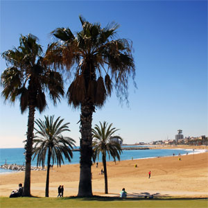

Home History Buildings Restaurants The Beach
La Barcelonta

La Barceloneta is a neighborhood in the Ciutat Vella district of Barcelona, Catalonia, Spain.Better source needed] The neighborhood was constructed during the 18th century for the residents of the Ribera neighborhood who had been displaced by the construction of the Ciudadela of Barcelona. The neighborhood is roughly triangular, bordered by the Mediterranean Sea, the Moll d'Espanya of Port Vell, and the El Born neighborhood. The neighborhood is serviced by its own stop on the Barcelona Metro. Torre Sant Sebastià is the terminus of the Port Vell Aerial Tramway; opened in 1931, it connects La Barceloneta with Montjuïc across Port Vell.
La Barceloneta is known for its sandy beach and its many restaurants and nightclubs along the boardwalk. Over the past several years the quality of the sand on the beach has become a source of continued controversy. In February 2008, the World Health Organisation began an inquiry designed to ascertain whether the sand meets WHO beach health and safety guidelines.
Amongst the attractions on Barceloneta's beach are German artist Rebecca Horn's "Homenatge a la Barceloneta" monument, and, where the beach gives way to the Port Olimpic, Frank Gehry's modern "Peix d'Or" sculpture.
The Barceloneta was once the home of fishermen, people associated with the fishing trade and the metal industry, and is now one of the city’s most visited and popular districts. In 1988, in pre-Olympic days, the decision was taken to demolish the old beachfront restaurants, known as xiringuitos, and public baths, heralding a process of opening the city up to the sea and the modernisation of an area which now offers first-class beaches as the main attraction for its visitors.